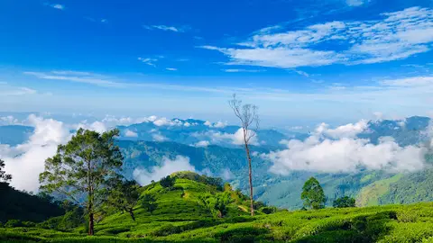
Ratnapura 01
NATURE & ADVENTURE
Belihuloya River Village
A peaceful destination with mountain views, flowing streams and refreshing natural scenery.
From misty mountain trails to hidden waterfalls and ancient cultural sites, discover the natural beauty and heritage of Ratnapura and Kegalle.
Discover breathtaking mountain peaks, hiking trails and stunning viewpoints.
Explore hidden waterfalls and refreshing natural escapes across the province.
Nature, culture and adventure in one province.
Find a place that matches your kind of adventure.

Ratnapura 01A peaceful destination with mountain views, flowing streams and refreshing natural scenery.
 Ratnapura
02
Ratnapura
02
A beautiful waterfall recognised for its distinctive Bo-leaf shape and green surroundings.
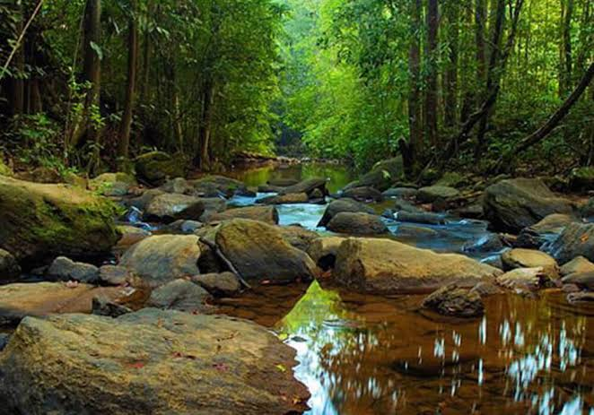
Ratnapura area 03Explore a remarkable rainforest filled with tropical plants, birds and wildlife.
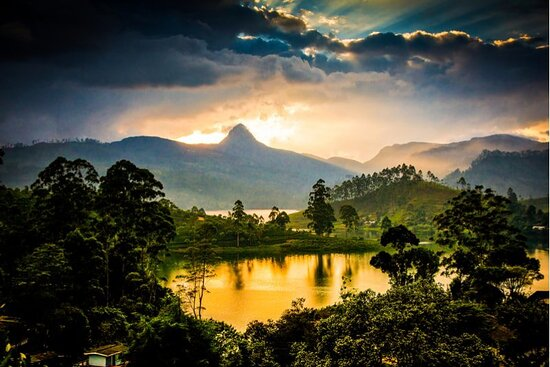
Ratnapura side 04A sacred mountain that attracts pilgrims and hikers from different backgrounds.
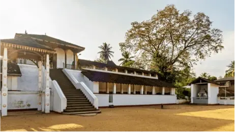
Ratnapura 05Discover a historic shrine connected to the spiritual and cultural traditions of Sabaragamuwa.
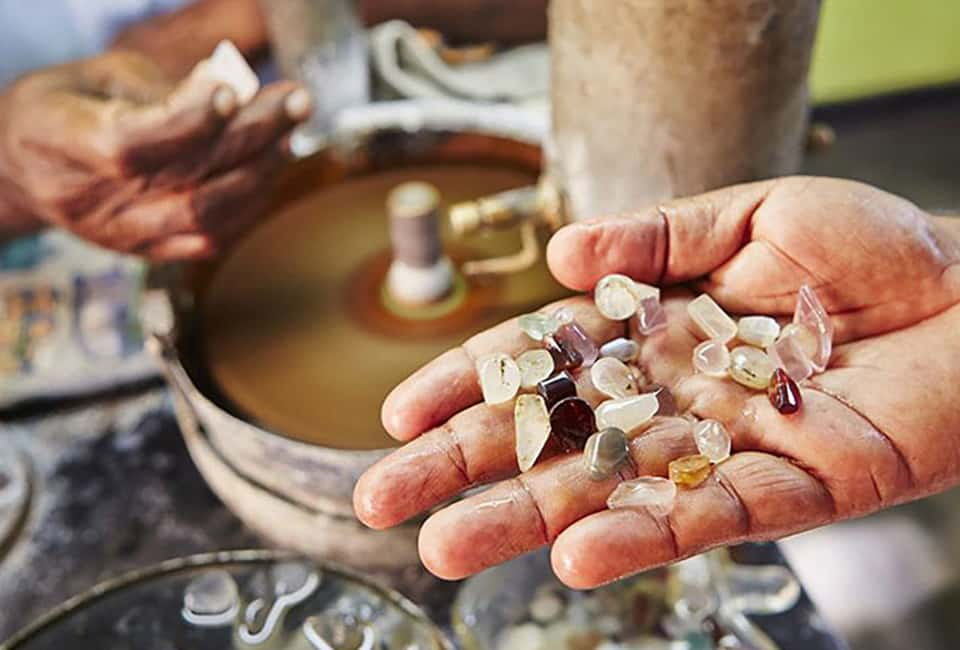
Ratnapura 06Discover the gemstone traditions that helped make Ratnapura famous.
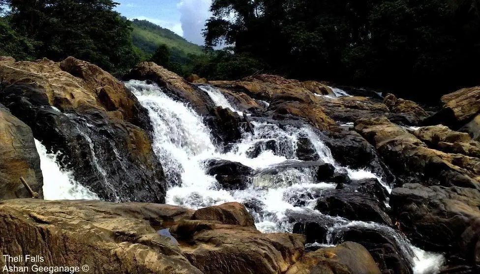
Kegalle 07A beautiful waterfall hidden within the natural surroundings of Kegalle District, providing a peaceful escape for nature lovers.
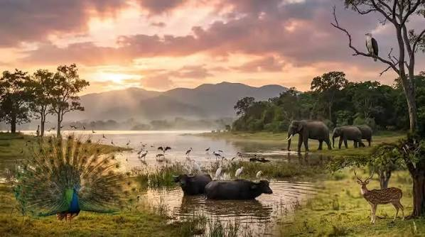
Southern area 08A wildlife destination known for elephant sightings and open natural habitats.
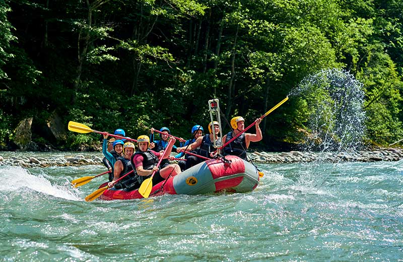
Kegalle 09Experience river scenery and lush rainforest landscapes in a well-known adventure destination.
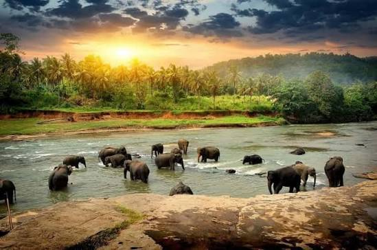
Kegalle 10A recognised elephant facility where visitors can learn about elephant care.
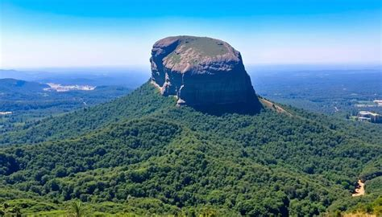
Kegalle area 11A remarkable rock formation surrounded by the landscapes of the Kegalle region.
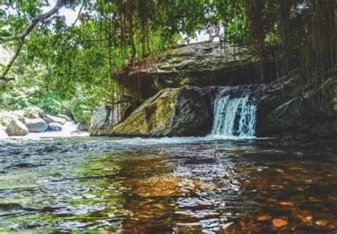
Kegalle 12Discover a scenic waterfall tucked into the green landscape of the Aranayake area.
Try another search term or choose a different category.
Enjoy the beauty of Sabaragamuwa while respecting its people, culture and natural environment.
Rain can affect waterfall visits, hiking trails and travel conditions.
Keep destinations clean and avoid disturbing wildlife or damaging plants.
Check transport, access conditions and local guidance before setting out.